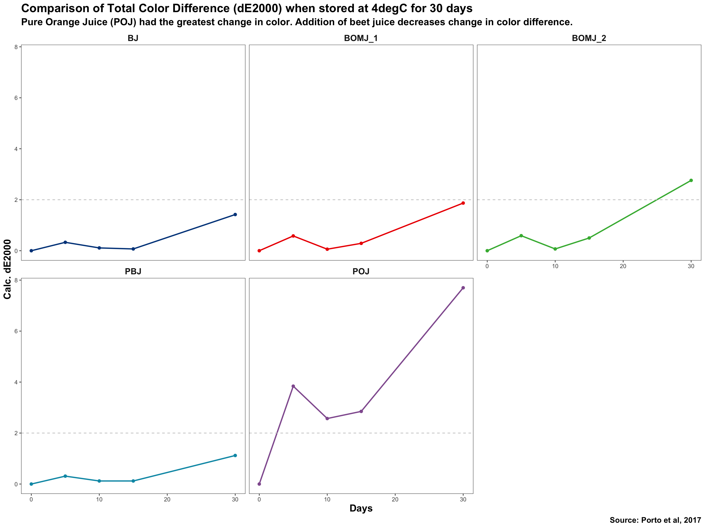
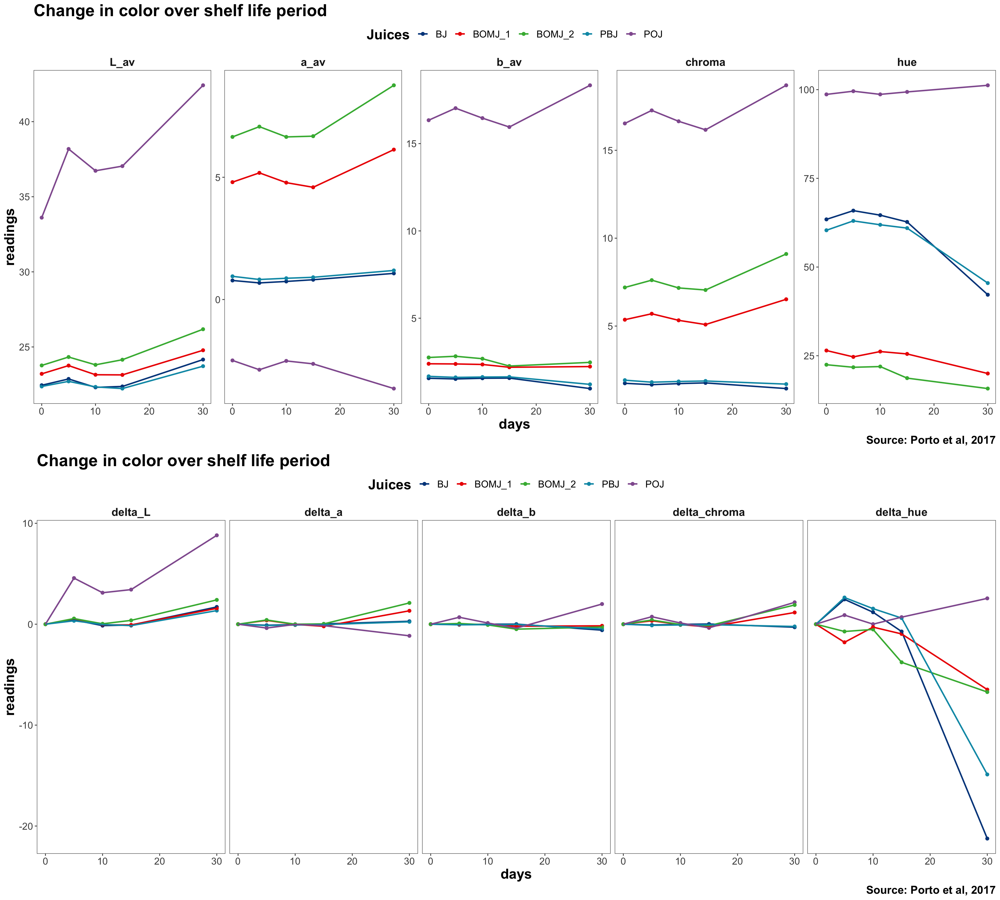

Using R for color calculations and data visualization
Why are food scientists interested in color analysis? Color is a visual quality attribute that determines food acceptance (Wrolstad and Smith (2017)). Instrumental color analysis is carried out in most commercial research and development laboratories to assess color stability, and in turn, shelf life of food products. The Hunter L a b color space is commonly used in the food industry, and was first published in 1942. Improvements were made to this system, to give more uniform color spacing, and in 1976, the CIELAB L* a* b* system was introduced. Chroma and Hue could be calculated from the a* and b* values. What do all these terms mean?
L* : lightness (0 being black and 100 being white)
a*: red (+) and green (-)
b*: yellow (+) and blue (-)
Chroma: a measure of how vivid/dull the color is. Chroma increases with increasing pigment concentration, and then decreases as the sample becomes darker.
Hue (in radian): the type of color - where red is defined as 0/360deg, yellow is defined as 90 deg, green is defined as 180 deg and blue is defined as 270 deg.
The calculations for chroma and hue are give below:
Chroma = sqrt(aˆ2 + bˆ2)
Hue is expressed in radians (multiply by 180/pi). However, this equation is only for the first quadrant. Other quadrants need to be handled so that a 360deg representation is accomodated (Mclellan, Lind, and Kime (1995)).
The L* C* H* color space is more useful than just looking at L* a* b*, since it takes into account human perception of color, rather than just looking at redness/greenness and yellowness/blueness individually.
Ultimately, when color is measured, other than having an objective set of numbers to describe colors, it is also of interest to assess if there is any color difference between a reference sample and a test sample, and to peg a number to this color difference and immediately tell if the color difference is visually obvious to people.
There are different equations for assessing color difference:
deltaE-1976: the first internationally endorced color difference equation. However, it does not take into account that the human eye is more sensitive to small color differences in some regions of the color wheel but less sensitive to others.
deltaE-1994: Improvements were made to the 1976 equation, but it lacked accuracy in the blue-violet region of the color space.
deltaE-2000: Corrected for the 1994 equation to improve accuracy in the blue-violet space. This is the most updated and accurate representation of total color difference so far, and the equation is given in: http://www2.ece.rochester.edu/~gsharma/ciede2000/ciede2000noteCRNA.pdf.
Previously, I worked with Excel spreadsheets to carry out color data calculations. It was a nightmare when I tried to calculate hue using Excel, as the equations used for +a/-a/+b/-b could be different and it was problematic when I was trying to fill an equation down for my shelf life study. DE2000 was complicated and I tried to use a spreadsheet that I downloaded off the Internet, but I had to copy my data over to the template spreadsheet and it was a lot of copying and pasting.
All I want, is a workflow that can house all my data in 1 place, and automatically apply calculations with minimal manual input.
I am so glad that I found R, and that there is an inbuilt package spacesXYZ, that can calculate the different variants of total color difference.
To develop a workflow for automatic color calculations. This include writing my own function for calculating chroma, hue, and using inbuilt functions within spacesXYZ package to calculate de2000.
To visualize data and derive insights from shelf life data clearly.
The data I am using is from a paper by Porto et al: https://www.mdpi.com/2306-5710/3/3/36. In this paper, the color data for five types of juices were given, and color changes were assessed in terms of L* a* b*, chroma and de1976. I went on further to look at hue, and de2000.
The five samples tested were:
data_l <- tribble(
~Juices, ~L_d0, ~L_d5, ~L_d10, ~L_d15, ~L_d30,
#-------/------/-----/--------/------/-------
"BJ", 22.45, 22.87, 22.31, 22.37, 24.16 ,
"PBJ", 22.37, 22.71, 22.34, 22.23, 23.72,
"POJ", 33.61, 38.18, 36.73, 37.04, 42.42,
"BOMJ_1", 23.21, 23.76, 23.15, 23.14, 24.78,
"BOMJ_2", 23.77, 24.33, 23.81, 24.15, 26.18
)
data_a <- tribble(
~Juices, ~a_d0, ~a_d5, ~a_d10, ~a_d15, ~a_d30,
#-------/------/-----/--------/------/-------
"BJ", 0.78, 0.68, 0.74, 0.81, 1.07,
"PBJ", 0.95, 0.82, 0.87, 0.91, 1.19,
"POJ", -2.49, -2.87, -2.51, -2.63, -3.64,
"BOMJ_1", 4.80, 5.18, 4.78, 4.59, 6.13,
"BOMJ_2", 6.65, 7.07, 6.65, 6.68, 8.76
)
data_b <- tribble(
~Juices, ~b_d0, ~b_d5, ~b_d10, ~b_d15, ~b_d30,
#-------/------/-----/--------/------/-------
"BJ", 1.56, 1.52, 1.56, 1.57, 0.97,
"PBJ", 1.67, 1.61, 1.63, 1.64, 1.21,
"POJ", 16.34, 17.03, 16.46, 15.95, 18.34,
"BOMJ_1", 2.39, 2.38, 2.35, 2.19, 2.23,
"BOMJ_2", 2.75, 2.82, 2.68, 2.26, 2.47
)
# Transform #####
data <- bind_cols(data_l, data_a, data_b, .name_repair = "unique") %>%
select(-Juices...7, -Juices...13) %>%
rename(juices = Juices...1)
data_reshape_L <- data %>%
pivot_longer(cols = starts_with("L"),
names_to = "days_L",
values_to = "L_av") %>%
select(juices, days_L, L_av)
data_reshape_a <- data %>%
pivot_longer(cols = starts_with("a"),
names_to = "days_a",
values_to = "a_av") %>%
select(juices, days_a, a_av)
data_reshape_b <- data %>%
pivot_longer(cols = starts_with("b"),
names_to = "days_b",
values_to = "b_av") %>%
select(juices, days_b, b_av)
data_reshaped <- bind_cols(data_reshape_L, data_reshape_a, data_reshape_b) %>%
mutate(days = parse_number(days_L)) %>%
select(juices...1, days, L_av, a_av, b_av) %>%
rename(juices = juices...1)
data_reshaped
# A tibble: 25 x 5
juices days L_av a_av b_av
<chr> <dbl> <dbl> <dbl> <dbl>
1 BJ 0 22.4 0.78 1.56
2 BJ 5 22.9 0.68 1.52
3 BJ 10 22.3 0.74 1.56
4 BJ 15 22.4 0.81 1.57
5 BJ 30 24.2 1.07 0.97
6 PBJ 0 22.4 0.95 1.67
7 PBJ 5 22.7 0.82 1.61
8 PBJ 10 22.3 0.87 1.63
9 PBJ 15 22.2 0.91 1.64
10 PBJ 30 23.7 1.19 1.21
# … with 15 more rowscal_chroma <- function (a_av, b_av) {
a_sq = a_av^2
b_sq = b_av^2
chroma = sqrt(a_sq + b_sq)
}
cal_hue <- function (a_av, b_av) {
if(a_av > 0 & b_av > 0) { # a pos, b pos
hue = 180*(atan(b_av/a_av)/pi)
} else if (a_av<0 & b_av > 0) { # a neg, b pos
hue = 180 + 180*(atan(b_av/a_av)/pi)
} else if (a_av<0 & b_av<0) { # a neg, b neg
hue = 180 + 180*(atan(b_av/a_av)/pi)
} else { # a pos, b neg
hue = 360 + 180*(atan(b_av/a_av)/pi)
}
}
data_transformed <- data_reshaped %>%
mutate(chroma = map2_dbl(.x = a_av,
.y = b_av,
.f = cal_chroma),
hue = map2_dbl(.x = a_av,
.y = b_av,
.f = cal_hue))
glimpse(data_transformed) # compares well with table
Rows: 25
Columns: 7
$ juices <chr> "BJ", "BJ", "BJ", "BJ", "BJ", "PBJ", "PBJ", "PBJ", "…
$ days <dbl> 0, 5, 10, 15, 30, 0, 5, 10, 15, 30, 0, 5, 10, 15, 30…
$ L_av <dbl> 22.45, 22.87, 22.31, 22.37, 24.16, 22.37, 22.71, 22.…
$ a_av <dbl> 0.78, 0.68, 0.74, 0.81, 1.07, 0.95, 0.82, 0.87, 0.91…
$ b_av <dbl> 1.56, 1.52, 1.56, 1.57, 0.97, 1.67, 1.61, 1.63, 1.64…
$ chroma <dbl> 1.744133, 1.665173, 1.726615, 1.766635, 1.444230, 1.…
$ hue <dbl> 63.43495, 65.89777, 64.62226, 62.70972, 42.19363, 60…initial <- data_transformed %>%
filter(days == 0) %>%
select(L_av, a_av, b_av, chroma, hue) %>%
rename(ini_L = L_av,
ini_a = a_av,
ini_b = b_av,
ini_chroma = chroma,
ini_hue = hue)
initial
# A tibble: 5 x 5
ini_L ini_a ini_b ini_chroma ini_hue
<dbl> <dbl> <dbl> <dbl> <dbl>
1 22.4 0.78 1.56 1.74 63.4
2 22.4 0.95 1.67 1.92 60.4
3 33.6 -2.49 16.3 16.5 98.7
4 23.2 4.8 2.39 5.36 26.5
5 23.8 6.65 2.75 7.20 22.5data_transformed_b<- data_transformed %>%
group_by(juices) %>%
nest() %>%
bind_cols(initial) %>%
unnest(cols = c(data))
data_transformed_b
# A tibble: 25 x 12
# Groups: juices [5]
juices days L_av a_av b_av chroma hue ini_L ini_a ini_b
<chr> <dbl> <dbl> <dbl> <dbl> <dbl> <dbl> <dbl> <dbl> <dbl>
1 BJ 0 22.4 0.78 1.56 1.74 63.4 22.4 0.78 1.56
2 BJ 5 22.9 0.68 1.52 1.67 65.9 22.4 0.78 1.56
3 BJ 10 22.3 0.74 1.56 1.73 64.6 22.4 0.78 1.56
4 BJ 15 22.4 0.81 1.57 1.77 62.7 22.4 0.78 1.56
5 BJ 30 24.2 1.07 0.97 1.44 42.2 22.4 0.78 1.56
6 PBJ 0 22.4 0.95 1.67 1.92 60.4 22.4 0.95 1.67
7 PBJ 5 22.7 0.82 1.61 1.81 63.0 22.4 0.95 1.67
8 PBJ 10 22.3 0.87 1.63 1.85 61.9 22.4 0.95 1.67
9 PBJ 15 22.2 0.91 1.64 1.88 61.0 22.4 0.95 1.67
10 PBJ 30 23.7 1.19 1.21 1.70 45.5 22.4 0.95 1.67
# … with 15 more rows, and 2 more variables: ini_chroma <dbl>,
# ini_hue <dbl># calculate de2000 using spacesXYZ package, input must be as matrix
lab_meas <- as.matrix(data_transformed_b[, c("L_av", "a_av", "b_av")])
lab_ini <- as.matrix(data_transformed_b[, c("ini_L", "ini_a", "ini_b")])
data_de <- spacesXYZ::DeltaE(lab_ini, lab_meas, metric = 2000)
data_transformed_c <- data_transformed_b %>%
bind_cols(data_de) %>%
rename(de2000 = ...13) %>%
ungroup() # remove group by juices
# round off to 2 digits
data_transformed_c$de2000 <- round(data_transformed_c$de2000, digits = 2)
glimpse(data_transformed_c)
Rows: 25
Columns: 13
$ juices <chr> "BJ", "BJ", "BJ", "BJ", "BJ", "PBJ", "PBJ", "PBJ…
$ days <dbl> 0, 5, 10, 15, 30, 0, 5, 10, 15, 30, 0, 5, 10, 15…
$ L_av <dbl> 22.45, 22.87, 22.31, 22.37, 24.16, 22.37, 22.71,…
$ a_av <dbl> 0.78, 0.68, 0.74, 0.81, 1.07, 0.95, 0.82, 0.87, …
$ b_av <dbl> 1.56, 1.52, 1.56, 1.57, 0.97, 1.67, 1.61, 1.63, …
$ chroma <dbl> 1.744133, 1.665173, 1.726615, 1.766635, 1.444230…
$ hue <dbl> 63.43495, 65.89777, 64.62226, 62.70972, 42.19363…
$ ini_L <dbl> 22.45, 22.45, 22.45, 22.45, 22.45, 22.37, 22.37,…
$ ini_a <dbl> 0.78, 0.78, 0.78, 0.78, 0.78, 0.95, 0.95, 0.95, …
$ ini_b <dbl> 1.56, 1.56, 1.56, 1.56, 1.56, 1.67, 1.67, 1.67, …
$ ini_chroma <dbl> 1.744133, 1.744133, 1.744133, 1.744133, 1.744133…
$ ini_hue <dbl> 63.43495, 63.43495, 63.43495, 63.43495, 63.43495…
$ de2000 <dbl> 0.00, 0.33, 0.11, 0.07, 1.42, 0.00, 0.31, 0.12, …The perceptible difference is defined theoretically as de2000 being greater than 2 http://zschuessler.github.io/DeltaE/learn/. Which samples have de2000 >2?
# threshold is de2000>2
above_threshold <- data_transformed_c %>%
filter(de2000>2) %>%
select(juices, days, de2000)
above_threshold # POJ
# A tibble: 5 x 3
juices days de2000
<chr> <dbl> <dbl>
1 POJ 5 3.84
2 POJ 10 2.57
3 POJ 15 2.85
4 POJ 30 7.7
5 BOMJ_2 30 2.76Color difference was already perceptible for pasteurized orange juice from day 5. For beet and orange mixed juice (1:2 v/v), the color difference was perceptibely at day 30, at the end of shelf life.
# Reshape data to make it suitable for facetting
data_viz_long <- data_transformed_c %>%
mutate(delta_L = L_av - ini_L,
delta_a = a_av - ini_a,
delta_b = b_av - ini_b,
delta_chroma = chroma - ini_chroma,
delta_hue = hue - ini_hue) %>%
select(juices, days, L_av:delta_hue) %>%
pivot_longer(cols = c(L_av:delta_hue),
names_to = "parameters",
values_to = "readings")
data_viz_long
# A tibble: 400 x 4
juices days parameters readings
<chr> <dbl> <chr> <dbl>
1 BJ 0 L_av 22.4
2 BJ 0 a_av 0.78
3 BJ 0 b_av 1.56
4 BJ 0 chroma 1.74
5 BJ 0 hue 63.4
6 BJ 0 ini_L 22.4
7 BJ 0 ini_a 0.78
8 BJ 0 ini_b 1.56
9 BJ 0 ini_chroma 1.74
10 BJ 0 ini_hue 63.4
# … with 390 more rowsdata_viz_long %>%
filter(parameters == "de2000") %>%
ggplot(aes(days, readings)) +
geom_point(aes(col = juices), size = 2) +
geom_line(aes(col = juices), size = 1) +
scale_color_lancet() +
geom_hline(yintercept = 2, col = "grey77", lty = 2) +
labs(title = "Comparison of Total Color Difference (dE2000) when stored at 4degC for 30 days",
x = "Days",
y = "Calc. dE2000",
subtitle = "Pure Orange Juice (POJ) had the greatest change in color. Addition of beet juice decreases change in color difference.",
caption = "Source: Porto et al, 2017") +
facet_wrap(~juices, ncol = 3) +
theme_few() +
theme(title = element_text(face = "bold", size = 16),
legend.position = "none",
strip.text = element_text(face = "bold", size = 14))

Whilst we know that pasteurized orange juice had perceptible color difference, what exactly was the difference due to? To answer this question, we will have to look at individual parameters (L* a* b* chroma and hue).
viz_absolute <- data_viz_long %>%
filter(parameters %in% c("L_av", "a_av", "b_av", "chroma", "hue")) %>%
mutate(parameters_fct = factor(parameters,
levels = c("L_av", "a_av", "b_av", "chroma", "hue"))) %>%
ggplot(aes(days, readings, group = juices)) +
geom_point(aes(col = juices), size = 2) +
geom_line(aes(col = juices), size = 1) +
scale_color_lancet() +
labs(title = "Change in color over shelf life period",
caption = "Source: Porto et al, 2017",
col = "Juices") +
facet_wrap( ~ parameters_fct, ncol = 5, scales = "free") +
theme_few()+
theme(title = element_text(face = "bold", size = 20),
strip.text = element_text(face = "bold", size = 16),
axis.text = element_text(size = 14),
legend.text = element_text(size = 14),
legend.position = "top")
viz_change <- data_viz_long %>%
filter(parameters %in% c("delta_L", "delta_a", "delta_b", "delta_chroma", "delta_hue")) %>%
mutate(parameters_fct = factor(parameters,
levels = c("delta_L", "delta_a", "delta_b", "delta_chroma", "delta_hue"))) %>%
ggplot(aes(days, readings, group = juices)) +
geom_point(aes(col = juices), size = 2) +
geom_line(aes(col = juices), size = 1) +
scale_color_lancet() +
labs(title = "Change in color over shelf life period",
caption = "Source: Porto et al, 2017",
col = "Juices") +
facet_wrap( ~ parameters_fct, ncol = 5) +
theme_few()+
theme(title = element_text(face = "bold", size = 20),
strip.text = element_text(face = "bold", size = 16),
axis.text = element_text(size = 14),
legend.text = element_text(size = 14),
legend.position = "top")
grid.arrange(viz_absolute, viz_change, nrow = 2)

Beet juice is red in color and orange juice is orange-yellow in color. If we look at the L* a* b* values, from the onset, POJ had higher values for L* (ie more dark), lower a* (ie less red) and higher b* (ie more yellow). This is more easily understood by looking at the hue values, which describes the type of color (0 = red, 90 = yellow). In terms of color vividness, POJ was relatively more vivid than the other samples, and BJ and PBJ has the “dullest” color.
However, for total color difference, we would be more interested in the change in each parameter. POJ had a relatively large increase in L* (ie more darkening of color). For hue, there was a slight increase for POJ, but it was less in magnitude as compared to BJ and PBJ.
# A tibble: 3 x 4
juices days parameters readings
<chr> <dbl> <chr> <dbl>
1 BJ 30 delta_hue -21.2
2 PBJ 30 delta_hue -14.9
3 POJ 30 delta_hue 2.56BJ and PBJ had a decrease in hue of 21 units and 15 units. This meant that the color became less orange-red and more red. However, the change in de2000 was probably attributed to the change in L* for POJ. Even though there was a difference in hue, the total color difference was below threshold of 2 for BJ and PBJ. Color instability was mostly attributed to pasteurized orange juice, and beet juice was relatively more stable.
Betalains were responsible for the red color in beet, and carotenoids are responsible for the orange color in oranges (Tanaka, Sasaki, and Ohmiya (2008)). Fun fact: betalains color are not pH-dependent like anthocyanins, and they do not co-exist in plants.
I am happy that I managed to write a function for hue calculation, and use existing functions to calculate de2000. The calculations were really cumbersome when done in excel.
When looking at color difference, it is important to look at both absolute readings and change in parameter readings to get the whole picture. The former allows you to understand what the starting point was, and the latter zooms in to the change between the start and at the end of shelf life. Although the data could be expressed in numerical form in tables, properly drawn graphs give more intuitive understanding of the data. I really like the faceting function in R, as it allows me to see all the types of juices and different color parameters clearly. In addition, the grid.arrange function allows me to display more than one graph.
In this shelf life study, only one temperature condition was studied. What if more than one temperature/product were looked at? In such cases, repetitive color calculations may be made more efficient by using purrr.
https://www.mdpi.com/2306-5710/3/3/36 https://www.xrite.com/blog/lab-color-space https://sensing.konicaminolta.us/us/blog/identifying-color-differences-using-l-a-b-or-l-c-h-coordinates/ https://www.konicaminolta.com/instruments/knowledge/color/pdf/color_communication.pdf https://www.hdm-stuttgart.de/international_circle/circular/issues/13_01/ICJ_06_2013_02_069.pdf http://zschuessler.github.io/DeltaE/learn/